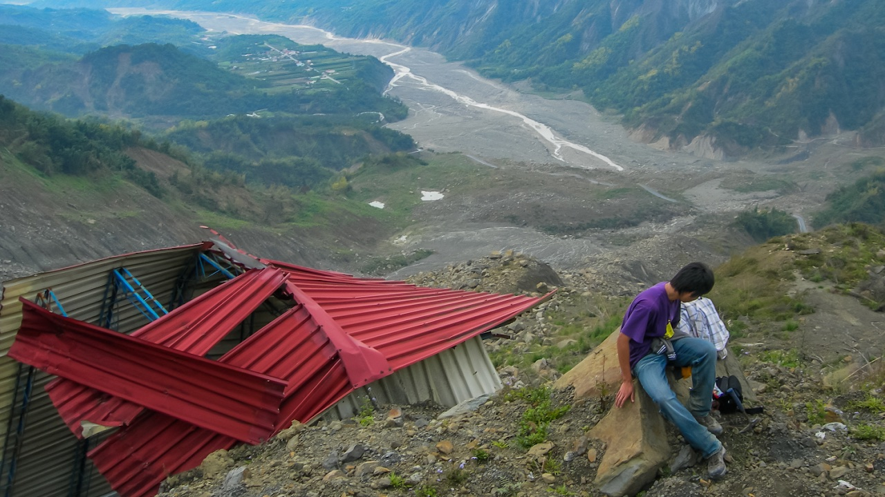

The origin of landslides and their impacts on landscape evolution

“Landslides represent the main erosion force, counteracting active uplift processes and shaping mountain topography.” — Rasigraf and Wagner (2022)
Landslide is one of the most common land-surface geohazards on Earth. They alter the local ecosystem, change stability of the slope, generate sudden increases in sediment delivery, and impact our human lives. Landslides are often associated with or triggered by other mechanisms, such as earthquake shaking, high-precipitation events, wildfire, or melting ice, forming compound natural hazards with cascading effects. The distribution and style of landslides are also known to be strongly influenced by local geology and topography. Key questions remain regarding:
- What trigger(s) dominate(s) landslide initiation in one place?
- What is the timescale required for landslide deposits to be evacuated from the source region to a sink?
- What is the role of landslide reactivation and remobilization in shaping the landform?
- How do these processes and feedbacks among them drive the direction of landscape evolution?
Cascading landslide hazards caused by extreme weather events (AghaKouchak et al., 2020).
Coseismic landslides and post-seismic landslide reactivation (Tanyaş et al., 2021).
Hsiao-Lin, southwestern Taiwan
Early in my career, I participated in a landslide research project in southwestern Taiwan. A catastrophic landslide occurred on August 9, 2009, caused by an extreme weather event: 1700 mm of cumulative rainfall in three days, brought by Typhoon Morakot. The entire Hsiao-Lin village was wiped out, with more than 400 people killed.
Before this slide, the landscape appeared to be a regular steep hillslope, with no clear precursory signs indicating that it was prone to failure. It was initially thought to be a large, deep-seated landslide, potentially linked to local bedrock instability and hydrogeological complexity. However, after our investigation, we found that the landslide mostly resulted from the remobilization of ancient mass-wasting deposits more than 80 meters thick. Stratigraphic studies of these deposits revealed a history of dynamic interplay among a series of landslides around 12–13 ka, outburst floods related to landslide-dam collapses, and episodic rapid fluvial incisions. These fluvial and landslide deposits were later preserved, largely smoothed by diffusive surface processes, and deeply downcut by modern bedrock rivers.
Our discoveries emphasize the importance of careful assessment of the distribution of ancient landslides and the geomechanical properties of their deposits. They also imply that these slides can persist and remain hidden in the landscape for tens of thousands of years, surviving through multiple climate-change cycles and earthquake events (note that Taiwan is a very seismically active terrain).
Topography after the Hsiao-Lin landslide and the thickness of sediment fills. The Hsiao-Lin village was located at the toe of this slide, near the red text “20” aside the modern river (Hsieh et al., 2012).
Residual landslide blocks, made of stratified ancient landslide deposits. You can see >80 m thick ancient landslide deposits exposed on the landslide wall (Hsieh et al., 2012).
Ancient landslide deposit strata, showing multiple historical mudslide events (M1, M2). Remobilization of these old landslide deposits led to the 2009 Hsiao-Lin landslide (Hsieh et al., 2012).
Vivianite coating on the wood fragment buried in the M2 mudslide deposit (ca. 12k years BP), indicating a quick burial event in a water-rich, reduced environment (Hsieh et al., 2012).
Recent work in the Pacific Northwest
Building on this experience, I am now working on landslide research in another tectonically active region—the Cascadia Subduction Zone. Over the past few years, researchers have been diligently studying the time-space distribution of past landslides in the coastal mountains of the Northwest Pacific. They have been exploring their relationships with other known geohazards and understanding their triggering mechanisms. Thus far, much work has been done in southwest Oregon. Within a relatively uniform bedrock geology (marine turbidites of the Tyee Formation), researchers have found strong climate-related signals (specifically, heavy precipitation events) in the deep-seated landslides in this region (Struble et al., 2021; LaHusen et al., 2020). Rarely, if ever, have landslides been found to be associated with proposed ancient large (magnitude ~9) historic earthquakes, including the most recent one that occurred in 1700 CE (Atwater et al., 2005). That said, it is possible that we are limited by insufficient data, and it may just be a matter of time before we find evidence to the contrary (Grant et al., 2022).
To address this challenge, I initiated my project by starting to fill the gap in landslide inventory data for southwestern Washington and northwestern Oregon. C14 radiocarbon dating and calibrated topographic metrics (e.g., surface roughness) of the landslide deposits will be used to estimate the temporal patterns of these historic slides (Booth et al., 2017). The results are expected to help investigate potential spatial differences along the Cascadia Subduction Zone and may provide insights into the patterns and styles of rupture for subduction earthquakes. My mapping area covers various bedrock types and climate zones along the coast, offering opportunities to understand how these natural factors contribute to the style and distribution of landslides. Data will be further compared with offshore turbidite records, past climate change datasets, and landscape evolution modeling results for a comprehensive discussion.
Simulated results of the 2014 Oso landslide, WA, on its time-sensitive topographic smoothing by natural surface diffusion (a–e) and a comparison of a similar but older landslide nearby (f, predicted age ~5 ka) (Booth et al., 2017).
C14-age calibrated surface-roughness age model for the deep-seated landslide deposits that occurred in the region of the Tyee Formation in southwestern Oregon (LaHusen et al., 2020).
pyTopoComplexity
To provide objective and reproducible measures of surface complexity on landslides, which is critical in this project for estimating their temporal distribution, I developed pyTopoComplexity (Lai et al., 2025, Earth Surface Dynamics), which is a first open-source Python package that implements advanced methods—two-dimensional continuous wavelet transform analysis, fractal dimension estimation, Rugosity Index, and Terrain Position Index calculations—for quantifying topographic complexity. It bridges the gap between traditional terrain analysis tools and modern quantitative geomorphology, providing robust and reproducible measures of surface complexity across multiple spatial scales.
The software has the capability to accurately assess morphometric properties of deep-seated landslide deposits and reveal characteristic landform scales. This toolkit can be integrated with the Landlab modeling platform, enabling researchers to link real-world observations with simulation-based insights on landscape evolution. This facilitates the estimation of critical geomorphic parameters such as in-situ hillslope diffusivity and fluvial erodibility in a non-steady-state, self-adjusting landscape, essential for understanding landscape recovery following significant geomorphic disturbances like landslide hazards.
Historical landslides in SW Washington, USA — Lai et al. (2023) poster at the AGU Fall Meeting.
LarryAGU2023_poster_compressed.pdf
Related publications
- Lai, L.S.-H., Booth, A. M., Duvall, A. R., and Herzig, E. (2025) Short Communication: Multiscale topographic complexity analysis with pyTopoComplexity. Earth Surface Dynamics, 13, 417–435. https://doi.org/10.5194/esurf-13-417-2025
- Lai, L.S.-H., Duvall, A.R., Booth, A.M., Wartman, J., Grant, A., and LaHusen, S. (2023) Preliminary mapping of deep-seated landslides in the Washington Coast Range, Cascadia Subduction Zone. Abstract (EP23D-1963) presented at 2023 AGU Fall Meeting, San Francisco, CA, 11–15 December.
- Hsieh, M.-L., Lai, L.S.-H., Lin, C.D.-J., Shyu, J.B.H., 2012. Late Quaternary landscape evolution and genesis of the 2009 catastrophic landslide in the Hsiao-lin area, southwestern Taiwan. Geomorphology 179, 225–239. https://doi.org/10.1016/j.geomorph.2012.08.014
Other references
- Rasigraf, O., Wagner, D., 2022. Landslides: An emerging model for ecosystem and soil chronosequence research. Earth-Science Reviews 231, 104064.
- AghaKouchak, A., Chiang, F., Huning, L.S., Love, C.A., Mallakpour, I., Mazdiyasni, O., Moftakhari, H., Papalexiou, S.M., Ragno, E., Sadegh, M., 2020. Climate extremes and compound hazards in a warming world. Annual Review of Earth and Planetary Sciences 48, 519–548.
- Tanyaş, H., Kirschbaum, D., Görüm, T., van Westen, C.J., Tang, C., Lombardo, L., 2021. A closer look at factors governing landslide recovery time in post-seismic periods. Geomorphology 391, 107912.
- LaHusen, S.R., Duvall, A.R., Booth, A.M., Grant, A., Mishkin, B.A., Montgomery, D.R., Struble, W., Roering, J.J., Wartman, J., 2020. Rainfall triggers more deep-seated landslides than Cascadia earthquakes in the Oregon Coast Range, USA. Science Advances 6, eaba6790.
- Struble, W.T., Roering, J.J., Burns, W.J., Calhoun, N.C., Wetherell, L.R., Black, B.A., 2021. The preservation of climate-driven landslide dams in western Oregon. Journal of Geophysical Research: Earth Surface 126, e2020JF005908.
- Atwater, B.F., Musumi-Rokkaku, S., Satake, K., Tsuji, Y., Ueda, K., Yamaguchi, D.K., 2005. The orphan tsunami of 1700—Japanese clues to a parent earthquake in North America. 1707.
- Grant, A.R.R., Struble, W.T., LaHusen, S.R., 2022. Limits to coseismic landslides triggered by Cascadia Subduction Zone earthquakes. Geomorphology 418, 108477.
- Booth, A.M., LaHusen, S.R., Duvall, A.R., Montgomery, D.R., 2017. Holocene history of deep-seated landsliding in the North Fork Stillaguamish River valley from surface roughness analysis, radiocarbon dating, and numerical landscape evolution modeling. Journal of Geophysical Research: Earth Surface 122, 456–472.